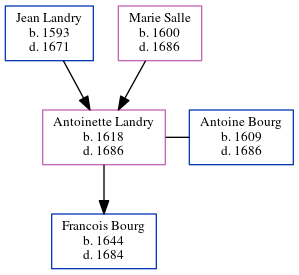

Antoinette Bourg (née Landry) 1618 - 1686
[ Home ] | [ Calendar ] | [ Surnames Index ] | [ Census Index ] | [ Family History ]The child of Jean Landry and Marie Salle, Antoinette Landry, the 10 times great-grandmother of Michele Copp (née Phillips), was born in Loudun, Vienne, Poitou-Charentes, France in 16181 and married Antoine Bourg (with whom she had 1 child, Francois) in Port Royal, Acadia, Nova Scotia, Canada in 16361, which is also where she died in 1686.
Parents
- Jean Claude was born in 1593
- Marie was born in 1600
Children
- Francois was born in 1644
Citations
- U.S. and International Marriage Records, 1560-1900 Online publication - Provo, UT, USA: The Generations Network, Inc., 2004.Original data - This unique collection of records was extracted from a variety of sources including family group sheets and electronic databases. Originally, the information was deriv
Family Tree
Generated by ged2site. Last updated on Jun 6, 2024